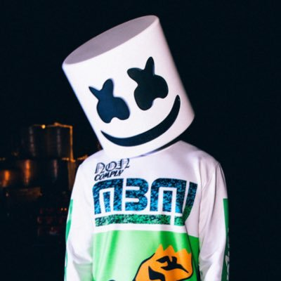

| Marshmello |
Marshmello (Filadélfia, 19 de maio de 1992) é um DJ e produtor de música norte-americano. Ficou amplamente conhecido após a música "Alone" alcançar o Billboard Hot 100. O DJ costuma fazer remixes de músicas de outros cantores, mas também as compõe. O produtor / DJ anônimo, está conquistando a indústria da música. Tornando-se um dos produtores de dança com crescimento mais rápido na história, sua base de fãs varia de crianças a adultos que o ajudaram a reunir mais de 2 bilhões de streams e mais de 300 shows esgotados consecutivos em todo o mundo, atualmente fazendo dele um dos 10 artistas mais ouvidos do Spotify no mundo. |
Mais informações aqui. |
Twitter |
 |